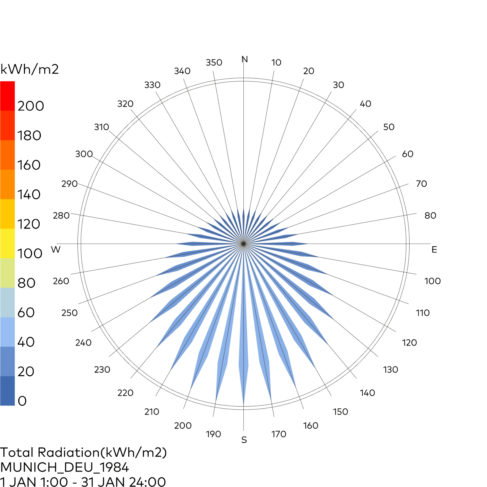
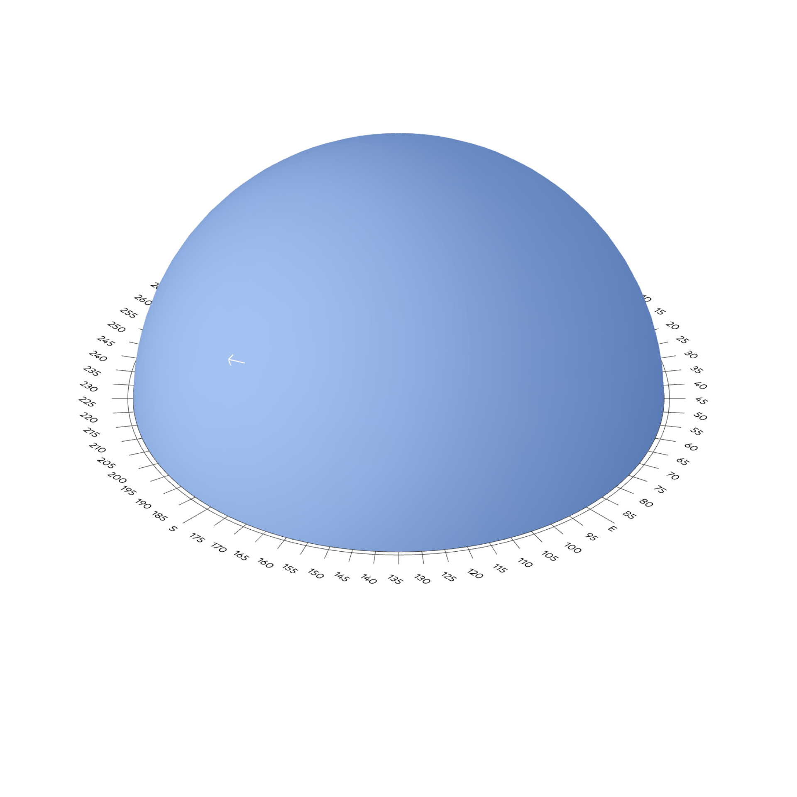
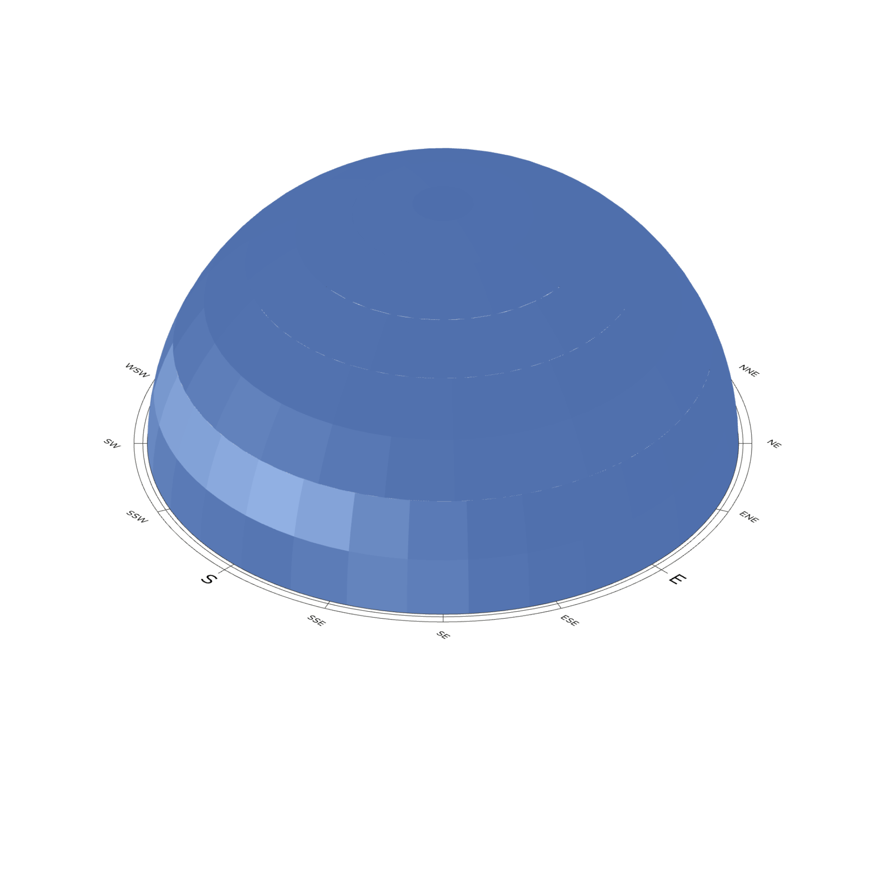

Sonnenexposition
Ladybug
⬤ Ladybug kartiert solare Exposition (GHI, DNI) präzise auf beliebige Flächen – stündlich über 8760 Stunden/Jahr. Farbcodierte Bestrahlungskarten (W/m²) zeigen Hochexpositions- und Schattenzonen, differenziert nach direkter/diffuser Strahlung und saisonal (Sommer-/Wintersonnenwende). Perfekt für PV-Optimierung, Solarthermie-Integration, Überhitzungsrisiko und Außenraum-Komfort. Ganzheitliche Solarressourcenanalyse für energieeffiziente, solaraktive Gebäudekonzepte.
⬤ Ladybug accurately maps solar exposure (GHI, DNI) on any surface – hourly over 8760 hours/year. Color-coded irradiation maps (W/m²) show high exposure and shadow zones, differentiated by direct/diffuse radiation and seasonally (summer/winter solstice). Perfect for PV optimization, solar thermal integration, overheating risk, and outdoor comfort. Holistic solar resource analysis for energy-efficient, solar-active building concepts.